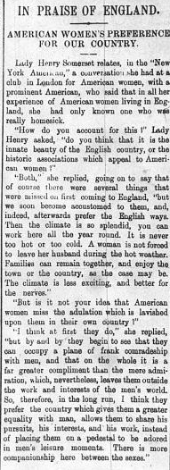

My chosen blog post is on the excerpt from May 29’s page 4, titled ‘In Praise of England: American Women’s Preference for Our Country’. It regards a conversation between noted British feminist and philanthropist, Lady Henry Somerset, and an unnamed, anonymous American female expatriate in London.

Apparently, most women that expatriate had spoken to preferred England over their home country (with the exception of one). The reasons the expatriate gave were the comparative independence and equality women receive in England as opposed to back home in America. Women may be praised more back across the pond, she said, but women in England are treated more as equals, ‘occupying a plane of frank comradeship’.
Speaking as someone reading this section a century and eleven years after its publication, this initially seemed to be just a sop to contemporary British nationalism. It looked like it was just a way for English businessman, sitting in comfortable chairs in opulent lobbies, being waited on by Egyptian servants, to have a good chortle over the inferiority of those other, lesser, nations.
But then I looked up Lady Henry Somerset, mostly just to see if she was anyone important. And she was. She has her own Wikipedia article and anything. Lady Henry was originally Lady Isabella Somers-Cooks, until she married Lord Henry Somerset in 1872. They had a relatively happy marriage, at least seemingly, but it turned out that Lord Henry was gay. And he was going behind Lady Henry’s back to sleep with other men. So she sued him for divorce and custody over her son, shoving Lord Henry out of the closet.
I’m of two minds about this, but I’m leaning towards Lord Henry in this the argument. Lord Henry was forced into a marriage with a person he was fundamentally not attracted to, and so he sought out the company of those he was. Lady Henry shouldn’t have had to suffer the pains of adultery, but Lord Henry shouldn’t have had his sexual orientation forced into public life, especially in a primitive nation like contemporary England.
After her marriage fell apart, Lady Henry became (in)famous for being one of the first women in British society to make the reasons behind a separation known publicly. She then became involved in numerous feminist organizations, and was once voted, by the London Evening News, the women readers would most prefer as their Prime Minister.
Now that I know of Lady Henry’s life and accomplishments, my opinion on this section has barely changed from ‘sop to British nationalism’ to ‘sop to British nationalism plus the biased opinion of a nationalistic ideologue’. The tale of Lady Henry is an interesting one, and this section of the Egyptian Gazette is just one facet of her long and storied life.